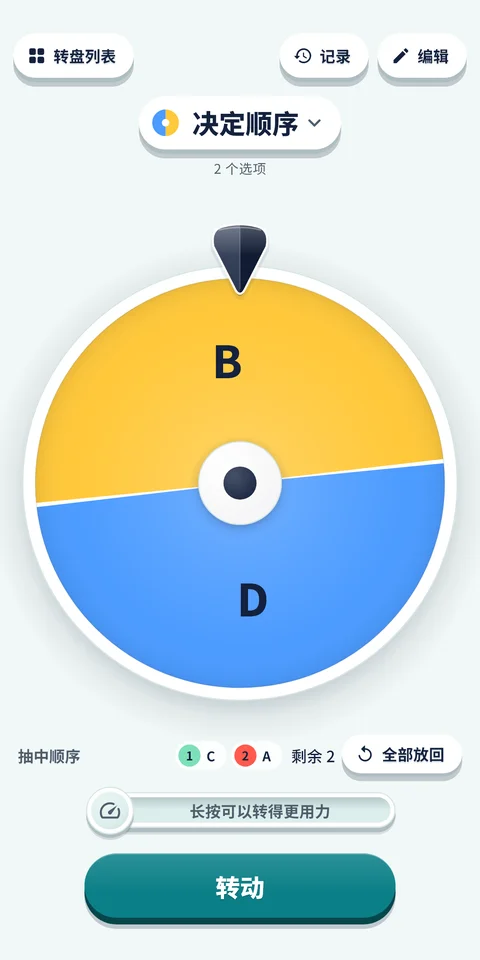
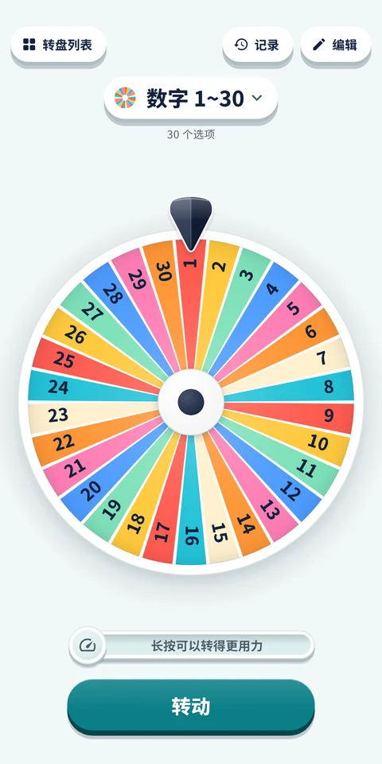
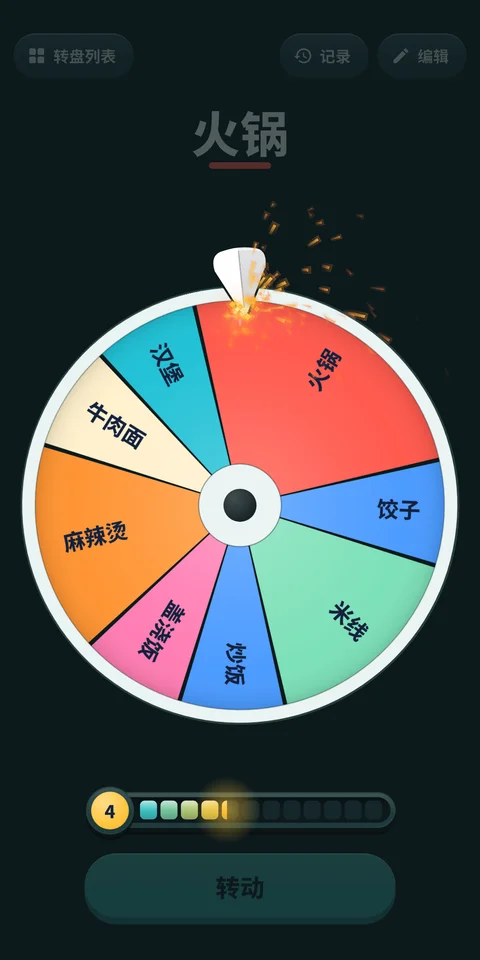

RotaPick 是一款转盘决定器：输入选项，转盘就会分成一个个彩色格子，转动后停在指针下的格子就是结果。午餐吃什么、谁先来、发言顺序、轮值、分组，还有“是/否”这类拿不定主意的事，都可以交给转盘随机决定。
截图





主要功能
- 使用方法 一个转盘可以填 2 到 100 个选项，每个选项一个颜色格子。轻点“转动”按默认力度转；长按“转动”，力度条会在约一秒内慢慢充满，松手后按这个力度转。也可以用手指拨动转盘。指针每经过一个格子的边界，都会有“嗒”的一声和轻微的振动；停下后，抽中的格子会弹出来，它的颜色铺满屏幕，并用大字显示结果。格子颜色可从 8 种里自选，也可自动与相邻格子错开；超过 30 个格子时格子里的文字会变小。转动时间可在设置中选择约 3 秒、5 秒或 8 秒。
- 比例看得见 格子的宽度就是概率。给格子设置 ×1 到 ×10 的比例，格子就按比例变宽，比例直接画在转盘上，没有隐藏比例。结果不是事先定好的，由转盘停下的角度决定，所以即使把力度掌握得再准，也无法瞄准某个格子。
- “去掉选中的” 开启“去掉选中的”后，抽中的格子会从转盘上去掉，直到点“全部放回”。适合决定顺序、抽人名、逐个分配。
- 马上开始 打开应用会直接显示上次用的转盘，一开始就有一个“午餐吃什么”转盘。在“新建转盘”里可以从空白开始，或选“是/否”“数字 1~6”“午餐吃什么”“决定顺序”模板，马上就能转。午餐模板有八样常见的菜。所有修改都会自动保存，没有保存按钮。
- 多个转盘与记录 可以保存多个转盘，支持重命名、复制、删除，长按拖动可调整顺序。转盘列表里最近用过的排在前面。编辑时可以拖动一行，或展开一行用移动按钮调整选项的顺序。每个转盘会在“记录”中保存最近 50 次结果和时间，记录可以清除。“抽中最多”会把抽中次数和格子宽度并排显示。在结果页面点“分享”，就能把结果以文字发送出去。
- 外观与声音 默认浅色界面，并跟随设备的深色模式。指针划过格子边界时会迸出火花，出结果时会放烟花。音效是木头的“嗒”声、马林巴结果音和叮铃声。在设置的“声音与效果”里可以关闭音效和振动，开启“减少特效”后不再有火花和烟花。
- 使用条件 没有订阅、付费锁定和应用内购买，所有功能都能使用。广告只有屏幕下方一条横幅，没有全屏广告。无需联网，无需登录，转盘、记录和设置只保存在你的设备上。支持英语、韩语、日语、简体中文和繁体中文，可在设置的“语言”中切换。
支持平台
Android
即将推出